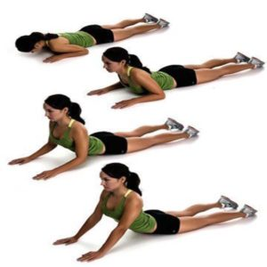
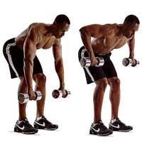
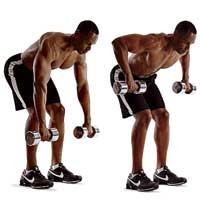

Guía de ejercicios para la parte baja de la espalda (Back Exercises) - OrthoInfo - AAOS
2021.12.08 10:40

from the American Academy of Orthopaedic Surgeons Diseases & Conditions
Popular Topics
Arthritis Broken Bones Osteoporosis Sports Injuries Tumors Children s Conditions Ortho-pinion Blog View All TopicsBy Body Part
Neck Back Shoulder Elbow Hand & Wrist Hip & Thigh Knee & Lower Leg Foot & AnkleFeatured
El síndrome de dolor patelofemoral (Patellofemoral Pain Syndrome)
TreatmentPopular Topics
Arthroscopy Joint Replacement Preparing for Surgery Nonsurgical Treatments Diagnostic Tests Ortho-pinion Blog View All TopicsBy Body Part
Neck Back Shoulder Elbow Hand & Wrist Hip & Thigh Knee & Lower Leg Foot & AnkleFeatured
Artroscopia de rodilla (Knee Arthroscopy)
Reemplazo total de cadera
RecoveryPopular Topics
Recovery from Surgery Rehabilitation Exercise Handouts Pain Management Ortho-pinion Blog View All TopicsBy Body Part
Neck Back Shoulder Elbow Hand & Wrist Hip & Thigh Knee & Lower Leg Foot & AnkleFeatured
Actividades posteriores a un remplazo de rodilla (Activities After Knee Replacement)
Staying HealthyPopular Topics
Bone Health Fitness & Exercise Sports Injury Prevention Home & Recreational Safety Ortho-pinion Blog View All TopicsBy Body Part
Neck Back Shoulder Elbow Hand & Wrist Hip & Thigh Knee & Lower Leg Foot & AnkleOur knowledge of orthopaedics. Your best health.
SYSTEM ALERT: OrthoInfo will be down for maintenance from 9 p.m. to 10 p.m. (CST) on 12/09/2021.
SYSTEM ALERT: OrthoInfo will be down for maintenance from 9 p.m. to 10 p.m. (CST) on 12/09/2021.
from the American Academy of Orthopaedic SurgeonsDiseases & Conditions
View All Topics By Body PartFeatured
Popular Topics
Arthritis Broken Bones Osteoporosis Sports Injuries Tumors Children s Conditions Ortho-pinion BlogTreatment
View All Topics By Body PartFeatured
Popular Topics
Arthroscopy Joint Replacement Preparing for Surgery Nonsurgical Treatments Diagnostic Tests Ortho-pinion BlogRecovery
View All Topics By Body PartFeatured
Popular Topics
Recovery from Surgery Rehabilitation Exercise Handouts Pain Management Ortho-pinion BlogStaying Healthy
View All Topics By Body PartPopular Topics
Bone Health Fitness & Exercise Sports Injury Prevention Home & Recreational Safety Ortho-pinion Blogespañol
EnglishRecovery
Guía de ejercicios para la parte baja de la espalda (Back Exercises)
Para restaurar la fortaleza de la parte baja de la espalda y un regreso gradual a las actividades cotidianas, los ejercicios regulares son importantes para su recuperación completa. Puede que recomienden el cirujano ortopédico y la fisioterapeuta que Ud. haga los ejercicios de 10 a 30 minutos una a tres veces por día durante la etapa temprana de su recuperación. Ellos pueden sugerir algunos de los ejercicios siguientes. Estaguía puede ayudarle a entender mejor el programa de ejercicio y actividad supervisado por su terapeuta y cirujano ortopédico.
Programa Inicial de Ejercicio
Bombear con el Tobillo
Acuéstese boca arriba. Mueve los tobillos arriba y abajo. Repitalo 10 veces.Deslizar el Talón
Acuéstese boca arriba.
Lentamente doble y enderece la rodilla.
Repitalo 10 veces.
Contracción Abdominal
Acuéstese boca arriba con las rodillas dobladas y las manos apoyadas debajo de las costillas. Contraer los músculos abdominales para empujar las costillas hacia la espalda. Asegúrese de no dejar de respirar. Mantenga esta posición por 5 segundos. Relájese. Repitalo 10 veces.Acuclillarse contra la Pared
Póngase con la espalda inclinanda contra la pared. Mueva los pies 12 pulgadas delante del cuerpo. Mantenga los músculos abdominales contraidos mientras lentamente doble las rodillas 45 grados. Mantenga esta posición 5 segundos. Lentamente regrese a la posición recta. Repitalo 10 veces.Levantar el Talón
Póngase con el peso distribuido igualmente sobre ambos pies. Lentamente levante los talones arriba y abajo. Repitalo 10 veces.Levantar la Pierna Extendida
Acuéstese boca arriba con una pierna extendida y la otra doblada en la rodilla.Contraer los músculos abdominales para estabilizar la parte baja de la espalda. Lentamente levante una pierna arriba aproximadamente 6 a 12 pulgadas y mantenga la posición por 1 a 5 segundos. Baje la pierna lentamente. Repitalo 10 veces.
Programa Intermedio de Ejercicio
Estirar una Rodilla hacia el Pecho
Acuéstese boca arriba con ambas rodillas dobladas. Sostenga un muslo detrás de la rodilla con una mano y traiga la rodilla hacia el pecho. Mantenga esta posición por 20 segundos. Relájese. Repitalo 5 veces en cada lado.Estirar el Tendón de la Corva
Acuéstese boca arriba con las piernas dobladas. Sostenga con la mano un muslo detrás de la rodilla. Lentamente enderece la rodilla hasta que sienta el dorso de muslo estirarse. Mantenga esta posición por 20 segundos. Relájese. Repitalo 5 veces en cada lado.Ejercicios para Estabilizar el Lumbar con la Pelota Suiza
Los músculos abdominales deben permanecer contraidos durante cada ejercicio. Véase el ejercicio "Contracción abdominal" del Programa Inicial de Ejercicio. Realice cada ejercicio por 60 segundos. Cuanto más lejos esté la pelota de su cuerpo, más difícil el ejercicio.
Acuéstese boca arriba con rodillas dobladas y pantorrillas apoyando sobre la pelota.
Acuéstese boca arriba con rodillas dobladas y pantorrillas apoyando sobre la pelota. Lentamente levante el brazo sobre la cabeza y bájelo, alternando el lado derecho con el izquierdo. Lentamente enderece una rodilla y relajela, alternando el lado derecho con el izquierdo. Lentamente enderece una rodilla y levante el brazo opuesto sobre la cabeza. Alterne las piernas y brazos opuestos. Lentamente " haga caminar " la pelota hacia delante y hacia atrás con las piernas.Sentado sobre la pelota con las caderas y rodillas dobladas 90 grados y los pies apoyados sobre el piso.
Sentado sobre la pelota con las caderas y rodillas dobladas 90 grados y los pies apoyados sobre el piso. Lentamente levante el brazo sobre la cabeza y bajelo, alternando el lado derecho con el izquierdo. Lentamente levante y baje el taló n, alternando el lado izquierdo con el derecho. Lentamente levante un taló n y levante el brazo opuesto sobre la cabeza. Alterne el opuesto brazo y taló n. Marchando: Lentamente levante un pie 2 pulgadas del piso, alternando el derecho con el izquierdo.Pó ngase de pie con la pelota entre la pared y la parte baja de la espalda.
Pó ngase de pie con la pelota entre la pared y la parte baja de la espalda. Lentamente doble las rodillas 45 a 90 grados. Mantenga esta posició n 5 segundos. Enderece las rodillas. Lentamente doble las rodillas 45 a 90 grados mientras levante ambos brazos sobre la cabeza.Acué stese boca abajo sobre la pelota.
Acué stese boca abajo sobre la pelota. Lentamente levante brazos alternos sobre la cabeza. Lentamente levante piernas alternas de 2 a 4 pulgadas sobre el piso. Combine 2 y 3, alternando piernas y brazos opuestos. Doble una rodilla. Lentamente levante esta pierna arriba, alternando la pierna izquierda con la derecha.¡ Tenga cuidado de no arquear la parte baja de la espalda!
Programa Avanzado de Ejercicio
Estirar el Flexor de la Cadera
Acué stese boca arriba cerca del borde de la cama, tirando las rodillas hacia el pecho. Lentamente baje una pierna, manteniendo la rodilla doblada, hasta que sienta que la parte de arriba de la cadera o del muslo esta estirada. Mantenga esta posició n por 20 segundos. Relá jese. Repitalo 10 veces en cada lado.Estirar el Piriformis
Acué stese boca arriba con ambas rodillas dobladas. Cruce una pierna encima de la otra. Tire la rodilla opuesta hacia el pecho hasta que sienta que elá rea de las nalgas o la cadera se estira. Mantenga esta posició n por 20 segundos. Relá jese. Repitalo 5 veces en cada lado.Ejercicios de Estabilizació n del Lumbar con la Pelota Suiza
Acué stese boca abajo sobre la pelota. " Haga caminar " las manos hacia delante de la pelota hasta que la pelota esté debajo de las piernas. Há galo al revé s para volver a la posició n del comienzo. " Haga caminar " las manos hacia delante de la pelota hasta que la pelota esté debajo de las piernas y lentamente levante los brazos alternos sobre la cabeza. " Haga caminar " las manos hacia delante de la pelota y lentamente realice planchas o pechadas.
Ejercicios Aeró bicos
Mantenga la espina dorsal en la posició n neutra mientras la estabilizal con los mú sculos abdominales para proteger la parte baja de la espalda harcer ejercicios aeró bicos.
Utilizar la bicicleta estacionaria por 20 a 30 minutos. Utilizar el molino de rueda para andar por 20 a 30 minutos.Last Reviewed
enero 2009
AAOS does not endorse any treatments, procedures, products, or physicians referenced herein. This information is provided as an educational service and is not intended to serve as medical advice. Anyone seeking specific orthopaedic advice or assistance should consult his or her orthopaedic surgeon, or locate one in your area through the AAOS Find an Orthopaedist program on this website.
About OrthoInfo Editorial Board Our Contributors Our Subspecialty Partners Contact Us
Privacy Policy Terms & Conditions Linking Policy AAOS Newsroom Find an Orthopaedist
Copyright ©1995-2021 by the American Academy of Orthopaedic Surgeons. All material on this website is protected by copyright. All rights reserved. This website also contains material copyrighted by third parties.
X
- Los mejores ejercicios para fortalecer la espalda y corregir la .
- Ejercicios de espalda en casa - Mundo Deportivo
- Los 15 mejores ejercicios para una espalda y dorsales en V
- Ejercicios para fortalecer la espalda sin hacernos daño
- 5 ejercicios básicos para lograr una espalda descomunal - AS .
- Los mejores ejercicios para acabar con el dolor de espalda
- 6 ejercicios con el propio peso para una espalda fuerte
- Los 11 mejores ejercicios para entrenar tu espalda en el .
- Guía de ejercicios para la parte baja de la espalda (Back .
- Ejercicios para la espalda en 15 minutos diarios - Mayo Clinic
- Los mejores ejercicios para fortalecer la espalda y corregir la .
en casa · Pues bien, este ejercicio de las dominadas deslizantes es uno de los más reputados a la hora de fortalecer y . - Ejercicios de espalda en casa - Mundo Deportivo
- Los 15 mejores ejercicios para una espalda y dorsales en V
- Ejercicios para fortalecer la espalda sin hacernos daño
- 5 ejercicios básicos para lograr una espalda descomunal - AS .
- Los mejores ejercicios para acabar con el dolor de espalda
- 6 ejercicios con el propio peso para una espalda fuerte
- Los 11 mejores ejercicios para entrenar tu espalda en el .
- Guía de ejercicios para la parte baja de la espalda (Back .
- Ejercicios para la espalda en 15 minutos diarios - Mayo Clinic
en casa · Pues bien, este ejercicio de las dominadas deslizantes es uno de los más reputados a la hora de fortalecer y .

 
